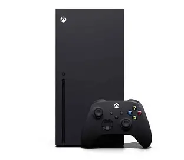

Microsoft's most powerful gaming console
| Model | Xbox series X | xbox series S | Xbox series X 1TB digtal White Edition | release | November 10, 2020 | November 10, 2020 | October 15, 2024 |
|---|
The Xbox Series X is innovative due to its enhanced performance, visual quality, and expanded access. It offers unprecedented speed and visual clarity, setting new standards for gaming experiences. The console's subscription-based access and online features have transformed how players interact and share gaming experiences. The hardware influences game development, guiding studios toward richer environments and more lifelike interactions. Sound completes the experience, every step, echo, and distant voice carrying clarity and direction. The Xbox Series X has created a space where stories are experienced together, not alone, and has influenced the wider industry, setting new expectations for developers and competitors.
The Xbox Series X and Series S run an operating system called a "Hypervisor," which is specially designed and different from Windows. Despite still being built on the popular Windows 11 core, this proprietary operating system is crucial to the console's functioning and speed. The Xbox Dashboard, a user interface offered by the system software, interfaces with Xbox Live for online capability and gives users access to games, media players, and applications.
The key features of the xbox series x are that it has 12 teraflops of GPU power that enhances the graphics and performance of the console. It is also seen to be backwards compatible which mean that one can play game from past xbox consoles. Then there is the Xbox's game pass which is a subscritipion that allow one to access and stream a vast library of games that are available.
Along with a choice of headphones, the Xbox Series X supports a broad selection of wired and wireless controllers, including pro, special edition, and basic controllers. Custom paddles to increase accuracy in fast-paced games, pro controllers, and low-latency adapters are examples of performance-enhancing accessories. Accessories for streaming make it easier to record audio and games for your viewers. To increase game capacity and ensure continuous playtime, they also provide charging stations, battery packs, and external storage options. The Xbox Series X and Series S systems are compatible with these.
A wide range of games are available on the Xbox Series X, including new releases, backward-compatible games, and subscription services like Xbox Game Pass. Examples of the games avaliable to xbox series x are Halo Infinite, Forza Horizon 5, Gears 5, Assassin's Creed Valhalla, Call of Duty: Modern Warfare.
By changing gaming and establishing new benchmarks for console performance, the Xbox Series X has had a profound influence on the direction of technology. In addition to improving the gaming experience, its cutting-edge features and software upgrades have opened the door for a more integrated and effective gaming environment. Due to its emphasis on cross-platform gaming and cloud gaming, the console has established itself as a market leader, shaping the future of gaming services and hardware. The Series X remains a standard for technical progress in the gaming industry as Microsoft gets ready for the next generation of Xbox hardware.